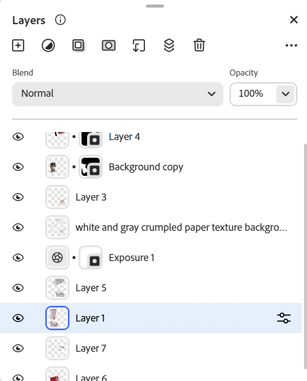
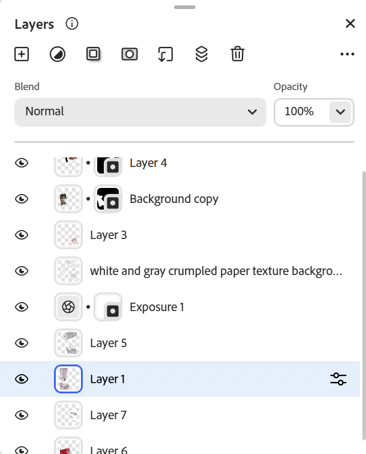

What's in our food? Photomontage

Layers

What's in our food? Photomontage
Layers

I loved this lesson as I have been making photomontages since I was in high school with my club where I was involved with making posters for events. I also just liked to make photomontages for fun especially during Covid lockdown. I found this lesson to be both fun and interesting as I have never used Photoshop to make photomontages before and the new software took some time to get use to. I found it incredicle that Photoshop can automatically remove the background of images and it can do it quite well (I only had to go back in to remove and add a few details!). I also found the blend modes to be such incredible cheat codes! They can do some many editing steps in just one step!! I found that this assignment was also quite difficult for me. I had a really hard time executing the idea that I had in my head, and I found that my final work was not satisfying. For my first photomontage, I decided to focus on the random chemicals and ingredients that are found in foods and other items. I wanted to focus on this idea since I have been following a case that came out about how a flea treatment had an ingredient in it that was fatally harming cats. This case has been on my mind since I have a cat, and it got me thinking about other foods that we consume that have ingredients and chemicals that we aren’t really aware of. I tried to make my piece seem like a pile of ingredient lists and nutrition facts. I then added the food and cat to seem like stickers that are added in place. I wanted my piece to look like a scrapbook. I used the blend mode color burn to make the images with the ingredients look harsh and slightly blurry so that they standout but also make the viewers kind of dizzy. I found most of my images on google images, grocery store websites, and adobe’s photo stock. Still, at the end, I'm not very sure if my concept of ‘what is in our foods’ came across to viewers. I tried to edit and play around with the images as much as possible but was never satisfied with the end result.
Reading Reflection on "With 'AI slop' distoring our reality, the world is sleepwalking into disaster"